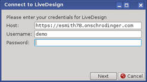

| Using | Features | Links |
Import structures and data from a LiveDesign project into Maestro.
To open this panel, browse to Tasks → Discovery Informatics and QSAR → Other: Import from LiveDesign in the Task Tool.
Before this panel opens, a logon dialog opens, so you can log on to the LiveDesign server. For this you need the URL of the host and your user name and password.

After logging on, click Next to proceed to the panel where you select the LiveDesign project and report, choose the properties to import and then perform the import.
To import data, make selections in the panel and click Import. An import is done for a particular choice of project and Live Report. If you want to do multiple imports, you can set up and start the next import as soon as an import is submitted. The status of the imports is shown in the status area at the bottom of the panel.
Choose the LiveDesign project you want to import data from. The menu lists the projects that are available on the server you connected to.
Choose the report that you want to import properties from. Clicking the menu displays a set of tools for selecting the report.
When you select a report, its name is displayed on the menu, and the tool box closes.
List of all the properties that can be imported from the Live Report into Maestro, with check boxes for selecting the properties for import. Properties that are not available for import are not shown, unless you select Show all columns in Live Report.
The ID property is mapped to the Title property in Maestro. It is selected by default and cannot be deselected, so it is grayed out.
The Compound Structure property is used to generate the 3D structure of the ligand in Maestro. It is selected by default and cannot be deselected, so it is grayed out.
Allselects or deselects all applicable properties listed.
List all the properties in the Live Report, whether they can be imported or not. The properties that are not available for import are unselected and grayed out. When this option is not selected, these properties are not shown in the Available properties to import list.
Set the name for the import task. This name is only used to identify the task: it is not used elsewhere, e.g. for naming an entry group.
Click the arrow and choose Reset to reset all panel settings to their defaults.
This icon spins while the task is in progress, and stops when it finishes.
Start the import. The progress icon spins, and a status report is shown below. When it finishes, new entries from the import appear in the project. The entries are added in groups that reflect the data source, e.g. there is a group for the 2D structures, and one for each 3D data column, which may contain subgroups containing proteins and their ligands, etc.
Once the import starts, you can set up and start another import, as the imports are run asynchronously.
The Back button takes you back to the logon dialog, where you can connect to a different server.